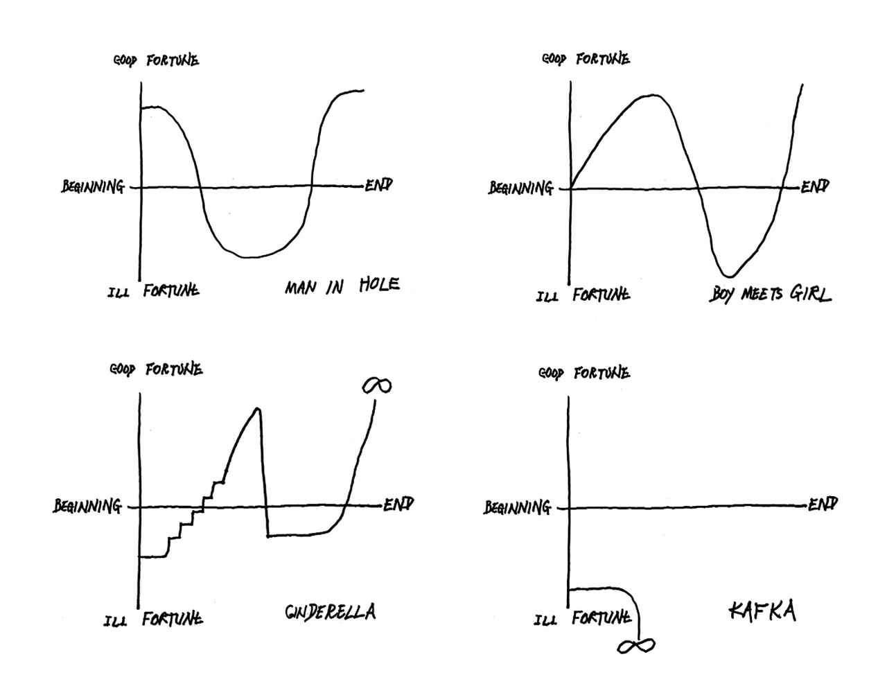

Schedule
Please see the general ESSLLI schedule (week 2) for context and location. Caution: this page may be subject to change.
| Monday | Tuesday | Wednesday | Thursday | Friday | |
| Slot 1 (2pm-2:45) | Enrique Aranda Murillo | Federico Pianzola | Daniel Altshuler & Dag Haug [ONLINE] | Merel Semeijn | Liliane Haegeman |
| Slot 2 (2:45-3:30) | Andreas Stokke | Ioan-Victor Popa | Eva-Maria Konrad | Enrico Terrone | Carla Umbach |
Abtracts
Daniel Altshuler (Oxford) & Dag Haug (Oslo): Deriving the paradoxical effects of metalepsis
In this talk, we discuss "metalepsis", defined by Genette as "a paradoxical transgression of the boundaries between narrative levels". We discuss two ways in which we can make sense of Genette's insight in formal semantic terms: (i) Sebastian Bücking's recent analysis of metalepsis in Balzac's Illusions perdues and (ii) an interpretation of Umberto Eco's analysis of metalepsis in Nerval's Sylvie. We argue against both of these accounts and propose that metalepsis in these fictions does not, in fact, involve transgression. It merely involves a paradoxical identification of the time of narration and the time narrated, with metalepsis in Illusions perdues also involving narrator accommodation (in the sense of Altshuler & Maier 2022).
Enrique Aranda Murillo (Granada): The Creative Power of Fiction-Making: A New Declaration View
Understanding the speech acts authors perform when creating fictional stories is crucial. Traditional views, such as pretense and make-believe, suggest that authors just pretend to perform speech acts or invite audiences to imagine. However, the declaration view posits that fiction-making involves declarations that change social reality. This talk defends a new version of the declaration view, proposing that fiction-making acts are linguistic declarations relying solely on language as an institution. This perspective explains the normative and creative aspects of fiction, showing how authors create fictional works and influence social practices through their narratives.
Liliane Haegeman (Gent): A narrative garden path in Agatha Christie’s Murder is easy
This case study shows how a precise grammatical analysis may contribute to our understanding and/or appreciation of works of fiction. The focus is the development of the plot in one detective story by Agatha Christie, Murder is Easy (MiE). The grammatical patterns investigated are register-specific subject omission and second conjunct subject ellipsis. By means of register-specific subject omission, Christie creates a referential ambiguity which gives rise to a narrative garden path (May 1991). Its competing interpretations are then carefully balanced and maintained up until the denouement mainly by means of second conjunct subject ellipsis.
Eva-Maria Konrad (Berlin): "Naturally, it’s got a lot of fictional parts". Metafiction in counterfactual novels
In counterfactual novels, scenarios are created in which history has taken a different path (and, for example, the Nazis have won the Second World War). Almost every one of these counterfactual scenarios contains counterfactual elements in turn, that both turn the story upside down once again and comment metafictionally on the counterfactual genre itself. The talk aims at exploring the precise relationship between counterfactuality and metafictionality by using some prominent literary examples.
Federico Pianzola (Groningen): Narrative Theory and the Formal Modelling of Fiction
From Russian formalism at the beginning of last century, to the 1970s and 1980s semiotic and structuralist theories of literary text, narratology endeavored to establish a path akin to what cognitive functionalism sought to achieve regarding mental notions: a coherent and comprehensive formalization of concepts that is able to account for the complexity of literary texts. More recently, computational literary studies have directly addressed the problem of turning literary theories into models that can be operationalized by computer-assisted analysis. Ontology engineering has the capability to provide theoretical as well as technical tools to specifically address the formal operationalization of conceptual frameworks. The aim of this presentation is to discuss viable and generalizable solutions for the ontological modeling of narrative and fiction. For illustrative purpose, the emphasis will be placed on a specific type of fictional entity: characters, their traits, and the narrative functions they have.
Ioan-Victor Popa (Paris): The Butterfly Effect
Fictions often include other fictions - the most common type of embedded fictions is what I call "telescoping fictions", viz. a fiction that encompasses another one told by some character in the original story. The framed fiction is secondary, ontologically speaking, to the framing fiction. However, I argue that there is another type of embedded fiction, often wrongfully discarded in the literature as necessarily inconsistent and practically unwritable - Ouroborian fictions, in which the two (or more) stories are, strangely enough, on the same ontological level, one depending on the other. Characters in a given fiction F1 can tell stories in which somebody creates F1–they make each other up. After discussing the conditions of possibility for consistent Ouroborian fictions, I will arguue that a strong opposition between actuality and fictionality cannot be maintained for such embedded fictions, as it seems that I can make myself fictional at the actual world by writing an Ouroborian fiction in which I (and not some mere fictional version or double of myself) am a character.
Merel Semeijn (Paris): Breaking the periphery
In previous work, I proposed that a statement that break the fourth wall in some fiction F (i.e., a statement through which a fictional character acknowledges their own fictionality) is a fictional statement that makes it prima facie true in F that an infelicitous/incoherent and truth-valueless statement is made, and a true and felicitous metafictional statement about F in the actual world simultaneously. In this presentation, I explore the consequences of this claim in light of the storyworld/periphery distinction, and different kinds of asides to the audience.
Andreas Stokke (Uppsala): Talking about Inconsistent Fictions
This paper distinguishes two kinds of inconsistency concerning fiction: cases in which what we are told as audiences is inconsistent and cases in which what is fictional is inconsistent. I show that these are independent, and correspondingly, we routinely speak metafictionally about each of them. In particular, we can speak metafictionally about stories where what we were told is inconsistent even though what is fictional is not. I suggest an account of this kind of metafiction.
Enrico Terrone (Genoa): Fictional Worlds and their Peripheries: An Artifactual Approach
I propose to cast works of fiction as artifacts that have a representational structure in virtue of which they fulfill the function of generating specific mental representations, namely fictional worlds. The latter are imaginary spatiotemporal systems in which fictional characters have their place. Fictional worlds differs from the actual world since they also have a (merely temporal) “periphery” in which narratees and (possibly) narrators have their place.
Carla Umbach (Cologne): Depictive manner complements invite the addresse's imagination by linguistic structure
Complement clauses introduced by manner wh-words like English how, French comment and German wie have, in addition to their manner reading, a non-standard depictive reading. It is close to declarative complements but in addition conveys the impression of subjectivity and vividness. In this talk, a semantic analysis is presented accounting for this reading on purely structural grounds (instead of assuming homonomy). It will be argued that depictive manner complements present an invitation to the addressee to form an image – to think of ways the situation could have been, which is why they are often referred to as narrative.
The shape of stories
If you've gone down that far, you might be interested in looking intensly into the following graphs, which is manifestly a brilliant attempt to get clear on the foundations of narratology. Whether these are semantic foundations or not is open for discussion... !
The explanation of these graphs can be found in Kurt Vonnegut's unforgettable lecture called "the Shape of Stories".